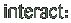

| 
As you roll over the pipes two things will happen. Firstly the valve will slide to the position of the mouse and increase the sound level of that particular pipe. Secondly text will appear telling you which section you are in. Click and the content page will load into the right hand side of the screen. |
| Extranet | FTP | Message board |